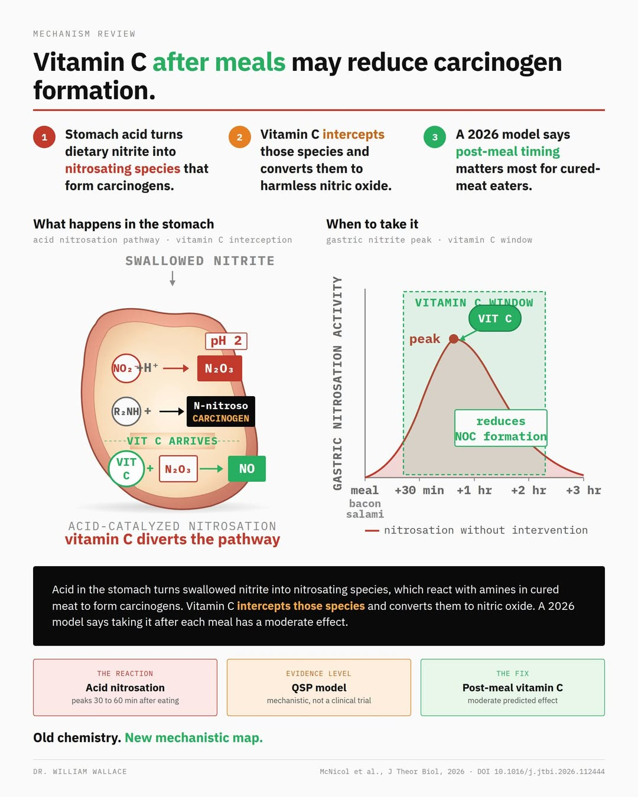

An explanation of why processed meat is carcinogenic.
It doesn’t matter whether the meat is processed using sodium nitrite or natural sources of nitrates and nitrites like celery juice. The same carcinogenic nitrosamine compounds are formed.
Vitamin C might help.
The WHO classifies processed meat as a group 1 carcinogen, in the same category as smoking, asbestos, and ionizing radiation.
#processedmeatHD #nitrosaminesHD #vitamincHD
If you eat bacon, ham, salami, or hot dogs, this is for you.
A new paper published last week in the Journal of Theoretical Biology mapped out what actually happens in your stomach when you eat processed meat, and offers something practical you can do about it.
Cured meats contain sodium nitrite, added as a preservative and to fix the pink color. In your stomach, that nitrite meets stomach acid and turns into a reactive form. That reactive form attacks proteins from the meal and produces a class of compounds called nitrosamines. NDMA, NDEA, and NMBA are the most studied. They are the same compounds that triggered the FDA recalls of valsartan, ranitidine, and metformin in recent years. The International Agency for Research on Cancer classifies them as probable human carcinogens, and they are a leading hypothesis for why processed meat consumption tracks with elevated risk of stomach and colorectal cancer in large epidemiologic studies.
Vitamin C disarms this reaction. It converts the reactive nitrite compound back into nitric oxide, which is harmless and diffuses away. This chemistry has been known since the 1970s, which is why the meat industry already adds ascorbic acid during processing. The question is whether you can do anything on your end, after the meat is already in your gut. That is what the new model addressed.
McNicol, Basu, and Layton at the University of Waterloo built a mathematical model that tracks how nitrite, vitamin C, and the resulting chemistry move through saliva, stomach, and intestine over the hours after a meal. They ran simulations across realistic dietary patterns and found two things.
First, when vitamin C is naturally present in the meal, as it is in leafy greens and most fruits and vegetables, the protective effect is substantial. The vitamin C is right there when the chemistry happens. This is likely why dietary nitrate from vegetables does not track with cancer risk the way nitrite from processed meats does.
Second, for meals where vitamin C is not naturally present, like a bacon sandwich or a charcuterie board, taking vitamin C after the meal produced a moderate predicted reduction in nitrosamine formation. Not transformative. Measurable.
A few important things to know. This is a modeling study, not a clinical trial. The model is calibrated against decades of published chemistry, but no trial has yet measured nitrosamine biomarkers in people randomized to take vitamin C after meals versus placebo. Treat the predicted effect as a reasonable hypothesis backed by mechanism, not as proven outcome.
Practical version. If you regularly eat vegetables with your meals, the vitamin C is already there and you are doing most of the work. If you eat cured meats without vegetables in the same sitting, taking 200 to 500 mg of vitamin C with water 30 to 60 minutes after the meal has a defensible mechanistic basis and a modest predicted effect. The dose matters less than the timing. Above about 200 mg in a single oral dose, absorption efficiency drops sharply, so megadoses are not the answer.
The bigger idea is that a meal is a chemical environment you can shape. The same food can be a problem or a non-event depending on what else is in the gut at the same time, and when.
McNicol et al., J Theor Biol, 2026
Tannenbaum & Wishnok, Am J Clin Nutr, 1991
Hord, Tang & Bryan, Am J Clin Nutr, 2009
